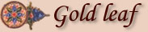

|
 Brother Remy is our most skilled illuminator. His assistant makes gold leaf by beating a gold coin into a sheet as thin as onion skin. Before placing the gold leaf on the page, Brother Remy usually applies a red or pink claylike underlayer to the parchment to give the gold a richer color. Then he applies glue and gently sets the gold leaf in place. To polish the gold, he uses a large, smooth wolf's tooth that he found in the woods. |